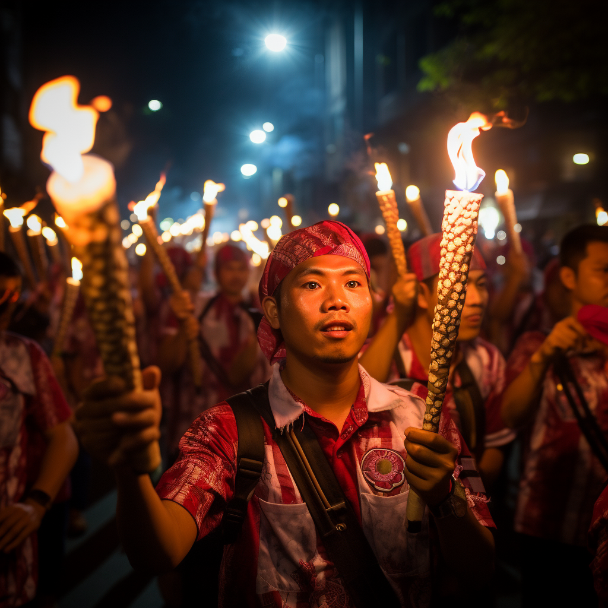

Torches of Independence
On Indonesian Independence Day, a sea of glowing torches illuminates the night as spirited crowds participate in the torchlight procession, honoring the nation's hard-fought journey to freedom. From bustling cities to remote villages, the sense of unity and patriotism is palpable. The flame symbolizes the spirit of Indonesia's founding fathers and their vision of a united nation. Amidst cheers and national pride, the torchlight procession becomes a collective expression of gratitude and determination, marking a pivotal moment in Indonesia's history and cultural identity.